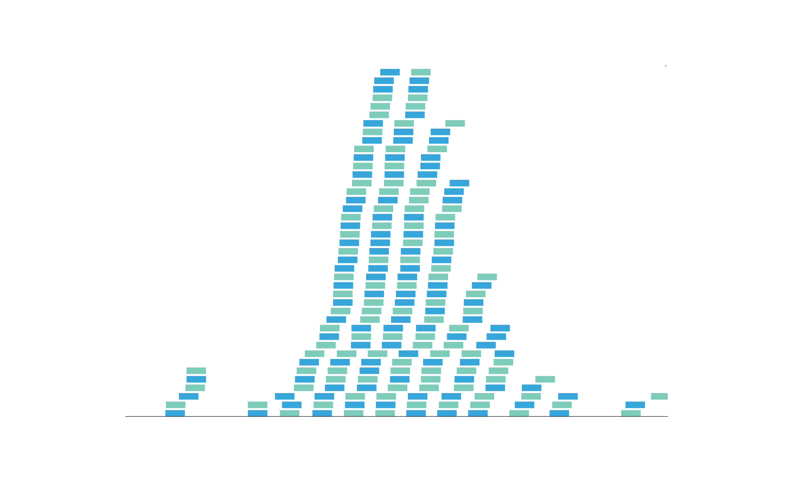
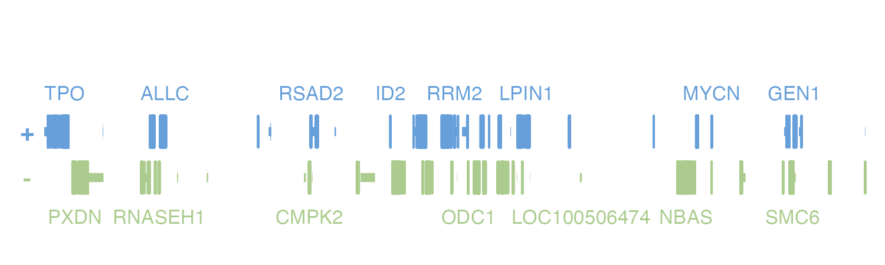

BentoBox plots are extremely customizable in appearance. In this article we will outline some of the major aesthetic customizations, including general features and specific plot type customizations.
All the data included in this article can be found in the supplementary package BentoBoxData.
gpar and common plot customizations
The most common types of customizations are inherited from grid gpar options. If a function accepts ..., this usually refers to gpar options that are not explicity listed as parameters in the function documentation. General valid parameters include:
| alpha | Alpha channel for transparency (number between 0 and 1). |
| fill | Fill color. |
| linecolor | Line color. |
| lty | Line type. (0=blank, 1=solid, 2=dashed, 3=dotted, 4=dotdash, 5=longdash, 6=twodash). |
| lwd | Line width. |
| lineend | Line end style (round, butt, square). |
| linejoin | Line join style (round, mitre, bevel). |
| linemitre | Line mitre limit (number greater than 1). |
| fontsize | The size of text, in points. |
| fontcolor | Text color. |
| fontface | The font face (plain, bold, italic, bold.italic, oblique). |
| fontfamily | The font family. |
| cex | Scaling multiplier applied to symbols. |
| pch | Plotting character, or symbol (integer codes range from 0 to 25). |
Additional fonts for the fontfamily argument can be imported with the packages extrafont and showtext. This makes it possible to incorporate special fonts like Times New Roman, Arial, etc. into BentoBox figures.
Backgrounds and baselines
By default, BentoBox plots have transparent backgrounds when placed on a bbPage. In many functions, this background color can be changed with the parameter bg.
bbPlotGenes(
chrom = "chr8", chromstart = 1000000, chromend = 2000000,
assembly = "hg19",
bg = "#f6f6f6",
x = 0.5, y = 0.5, width = 2, height = 1, just = c("left", "top"),
default.units = "inches"
) This makes it easy to clearly see the precise dimensional boundaries of
This makes it easy to clearly see the precise dimensional boundaries of BentoBox plots.
Some plots also benefit from baselines to quickly show where y = 0. This can aid in data interpretation and guide plot annotation placement. Baselines can be plotted in selective plots with baseline = TRUE.
bbPlotRanges(
data = IMR90_ChIP_CTCF_reads,
chrom = "chr21", chromstart = 29073000, chromend = 29074000,
assembly = "hg19",
fill = c("#7ecdbb", "#37a7db"),
baseline = TRUE, baseline.color = "black",
x = 0.5, y = 0.25, width = 6.5, height = 4.25,
just = c("left", "top"), default.units = "inches"
)
Gene and transcript plot aesthetics
BentoBox provides many useful features specific for enhancing gene and transcript visualizations:
Labels
Since BentoBox utilizes TxDb objects, orgDb objects, and internal citation information, BentoBox has access to numerous gene and transcript identifiers and can customize annotation labels in a variety of ways.
By default, BentoBox will rank gene labels according to citation number to prevent label overcrowding. However, we can provide our own list of prioritized genes to label in a plot. For example, if we plot the hg19 genes in the region chr2:1000000-20000000, our plot will show these labels:
bbPageCreate(
width = 5, height = 1.25,
showGuides = FALSE, xgrid = 0, ygrid = 0
)
genePlot <- bbPlotGenes(
chrom = "chr2", chromstart = 1000000, chromend = 20000000,
assembly = "hg19",
x = 0.25, y = 0.25, width = 4.75, height = 1
) Looking in the bb_genes object, we can see that there were numerous genes that were not labeled.
genePlot$genes
#> [1] "MIR3125" "RNASEH1-AS1" "LOC100506274" "MIR4757" "LINC00570"
#> [6] "C2orf50" "SLC66A3" "SILC1" "LRATD1" "DDX1"
#> [11] "LPIN1" "ATP6V1C2" "IAH1" "TRIB2" "GRHL1"
#> [16] "HPCAL1" "ID2" "MSGN1" "GEN1" NA
#> [21] "KCNF1" "KCNS3" "LOC400940" "MYCN" "TRAPPC12"
#> [26] "CPSF3" "SNTG2" "ALLC" "RPS7" "RRM2"
#> [31] "SOX11" "TPO" "MYT1L-AS1" "VSNL1" "COLEC11"
#> [36] "KLF11" "ASAP2" "TAF1B" "RSAD2" "GREB1"
#> [41] "RNF144A" "SNORA80B" "MIR4261" "MIR4262" "LINC01304"
#> [46] "LOC100506474" "NT5C1B-RDH14" "MIR4429" "PDIA6" "MYCNOS"
#> [51] "YWHAQ" "CMPK2" "MBOAT2" "OSR1" "E2F6"
#> [56] "CYS1" "MYT1L" "NTSR2" "RNASEH1" "FLJ33534"
#> [61] "LINC00298" "LINC00299" "GRASLND" "LINC00487" "ODC1"
#> [66] "NBAS" "ADI1" "KIDINS220" "RDH14" "ADAM17"
#> [71] "EIPR1" "LINC01249" "RAD51AP2" "PXDN" "SMC6"
#> [76] "NOL10" "CYRIA" "ITGB1BP1" "NT5C1B" "ROCK2"If we were particularly interested in MIR3125, we could include this in the geneOrder parameter to prioritize its labeling:
bbPageCreate(
width = 5, height = 1.25,
showGuides = FALSE, xgrid = 0, ygrid = 0
)
genePlot <- bbPlotGenes(
chrom = "chr2", chromstart = 1000000, chromend = 20000000,
assembly = "hg19",
geneOrder = c("MIR3125"),
x = 0.25, y = 0.25, width = 4.75, height = 1
)Label IDs used in transcript plots can be customized through bbAssembly() objects, and transcript label formatting can be changed through the labels parameter. For example, if we wish to display both transcript names and their associated gene names, we can set labels = "both":
bbPageCreate(
width = 6, height = 5,
showGuides = FALSE, xgrid = 0, ygrid = 0
)
transcriptPlot <- bbPlotTranscripts(
chrom = "chr2", chromstart = 1000000, chromend = 20000000,
assembly = "hg19",
labels = "both",
x = 0.25, y = 0.25, width = 5.5, height = 4.5
)
Highlighting genes by color
In addition to changing fill and fontcolor to change the colors of all genes in a plot, specific gene structures and their labels can be highlighted in a different color with geneHighlights. If we revisit the bb_genes plot above, we can highlight RRM2 by creating a data.frame with “RRM2” in the first column and its highlight color in the second column:
geneHighlights <- data.frame("geneName" = "RRM2", "color" = "steel blue")We can then pass this into our bbPlotGenes() call:
bbPageCreate(
width = 5, height = 1.25,
showGuides = FALSE, xgrid = 0, ygrid = 0
)
genePlot <- bbPlotGenes(
chrom = "chr2", chromstart = 1000000, chromend = 20000000,
assembly = "hg19",
geneHighlights = geneHighlights, geneBackground = "grey",
x = 0.25, y = 0.25, width = 4.75, height = 1
)
Since geneHighlights is a data.frame, we can highlight multiple genes in different colors at once. For example, let’s now highlight RRM2 in “steel blue” and PXDN in “red”:
geneHighlights <- data.frame(
"geneName" = c("RRM2", "PXDN"),
"color" = c("steel blue", "red")
)
bbPageCreate(
width = 5, height = 1.25,
showGuides = FALSE, xgrid = 0, ygrid = 0
)
genePlot <- bbPlotGenes(
chrom = "chr2", chromstart = 1000000, chromend = 20000000,
assembly = "hg19",
geneHighlights = geneHighlights, geneBackground = "grey",
x = 0.25, y = 0.25, width = 4.75, height = 1
)
Customizing transcripts by strand
To distinguish which strand a transcript belongs to, bbPlotTranscripts() colors transcripts by strand with the parameter colorbyStrand. The first value in fill colors positive strand transcripts and the second fill value colors negative strand transcripts. To further organize transcripts by strand, we can use strandSplit to separate transcript elements into groups of positive and negative strands:
bbPageCreate(
width = 6, height = 5,
showGuides = FALSE, xgrid = 0, ygrid = 0
)
transcriptPlot <- bbPlotTranscripts(
chrom = "chr2", chromstart = 1000000, chromend = 20000000,
assembly = "hg19",
strandSplit = TRUE,
x = 0.25, y = 0.25, width = 5.5, height = 4.5
)
Now all our positive strand transcripts are grouped together above the group of negative strand transcripts.
Hi-C plot customizations
BentoBox includes many types of customizations for Hi-C plots. BentoBox provides 3 different Hi-C plotting functions based on the desired plot shape:
bbPlotHicSquare(): Plots a square, symmetrical Hi-C plot with genomic coordinates along both the x- and y-axes.bbPlotHicTriangle(): Plots a triangular Hi-C plot where the genome region falls along the base of the triangle.bbPlotHicRectangle(): Plots a triangular Hi-C plot with additional data filling the surrounding regions to form a rectangle.
All Hi-C plot types can use different color palettes, and colors can be linearly or log-scaled with the colorTrans parameter.
bb_hicSquare plots can be further customized to include two datasets in one plot. Instead of plotting both symmetrical halves of the plot, we can set one dataset as half = "top" and the other dataset as half = "bottom":
data("GM12878_HiC_10kb")
data("IMR90_HiC_10kb")
bbPageCreate(
width = 3.25, height = 3.25, default.units = "inches",
showGuides = FALSE, xgrid = 0, ygrid = 0
)
params <- bbParams(
chrom = "chr21", chromstart = 28000000, chromend = 30300000,
assembly = "hg19", resolution = 10000,
x = 0.25, width = 2.75, just = c("left", "top"), default.units = "inches"
)
hicPlot_top <- bbPlotHicSquare(
data = GM12878_HiC_10kb, params = params,
zrange = c(0, 200),
half = "top",
y = 0.25, height = 2.75
)
hicPlot_bottom <- bbPlotHicSquare(
data = IMR90_HiC_10kb, params = params,
zrange = c(0, 70),
half = "bottom",
y = 0.25, height = 2.75
)Session Info
sessionInfo()
#> R version 4.1.0 (2021-05-18)
#> Platform: x86_64-apple-darwin17.0 (64-bit)
#> Running under: macOS Big Sur 10.16
#>
#> Matrix products: default
#> BLAS: /Library/Frameworks/R.framework/Versions/4.1/Resources/lib/libRblas.dylib
#> LAPACK: /Library/Frameworks/R.framework/Versions/4.1/Resources/lib/libRlapack.dylib
#>
#> locale:
#> [1] en_US.UTF-8/en_US.UTF-8/en_US.UTF-8/C/en_US.UTF-8/en_US.UTF-8
#>
#> attached base packages:
#> [1] stats4 parallel grid stats graphics grDevices utils
#> [8] datasets methods base
#>
#> other attached packages:
#> [1] org.Hs.eg.db_3.13.0
#> [2] TxDb.Hsapiens.UCSC.hg19.knownGene_3.2.2
#> [3] GenomicFeatures_1.44.0
#> [4] AnnotationDbi_1.54.1
#> [5] Biobase_2.52.0
#> [6] GenomicRanges_1.44.0
#> [7] GenomeInfoDb_1.28.1
#> [8] IRanges_2.26.0
#> [9] S4Vectors_0.30.0
#> [10] BiocGenerics_0.38.0
#> [11] BentoBoxData_0.99.4
#> [12] BentoBox_0.99.7
#>
#> loaded via a namespace (and not attached):
#> [1] bitops_1.0-7 matrixStats_0.60.0
#> [3] fs_1.5.0 bit64_4.0.5
#> [5] filelock_1.0.2 progress_1.2.2
#> [7] httr_1.4.2 RColorBrewer_1.1-2
#> [9] rprojroot_2.0.2 tools_4.1.0
#> [11] bslib_0.2.5.1 utf8_1.2.2
#> [13] R6_2.5.0 DBI_1.1.1
#> [15] colorspace_2.0-2 prettyunits_1.1.1
#> [17] tidyselect_1.1.1 bit_4.0.4
#> [19] curl_4.3.2 compiler_4.1.0
#> [21] textshaping_0.3.5 xml2_1.3.2
#> [23] desc_1.3.0 DelayedArray_0.18.0
#> [25] rtracklayer_1.52.0 sass_0.4.0
#> [27] scales_1.1.1 rappdirs_0.3.3
#> [29] pkgdown_1.6.1 systemfonts_1.0.2
#> [31] stringr_1.4.0 digest_0.6.27
#> [33] Rsamtools_2.8.0 rmarkdown_2.9
#> [35] XVector_0.32.0 pkgconfig_2.0.3
#> [37] htmltools_0.5.1.1 MatrixGenerics_1.4.0
#> [39] highr_0.9 dbplyr_2.1.1
#> [41] fastmap_1.1.0 rlang_0.4.11
#> [43] RSQLite_2.2.7 gridGraphics_0.5-1
#> [45] jquerylib_0.1.4 BiocIO_1.2.0
#> [47] generics_0.1.0 jsonlite_1.7.2
#> [49] BiocParallel_1.26.1 dplyr_1.0.7
#> [51] RCurl_1.98-1.3 magrittr_2.0.1
#> [53] ggplotify_0.0.7 GenomeInfoDbData_1.2.6
#> [55] Matrix_1.3-4 Rcpp_1.0.7
#> [57] munsell_0.5.0 fansi_0.5.0
#> [59] lifecycle_1.0.0 stringi_1.7.3
#> [61] yaml_2.2.1 SummarizedExperiment_1.22.0
#> [63] zlibbioc_1.38.0 BiocFileCache_2.0.0
#> [65] blob_1.2.1 crayon_1.4.1
#> [67] lattice_0.20-44 Biostrings_2.60.1
#> [69] hms_1.1.0 KEGGREST_1.32.0
#> [71] knitr_1.33 pillar_1.6.2
#> [73] rjson_0.2.20 biomaRt_2.48.2
#> [75] strawr_0.0.8 XML_3.99-0.6
#> [77] glue_1.4.2 evaluate_0.14
#> [79] data.table_1.14.0 BiocManager_1.30.16
#> [81] png_0.1-7 vctrs_0.3.8
#> [83] gtable_0.3.0 purrr_0.3.4
#> [85] assertthat_0.2.1 cachem_1.0.5
#> [87] ggplot2_3.3.5 xfun_0.24
#> [89] restfulr_0.0.13 ragg_1.1.3
#> [91] tibble_3.1.3 rvcheck_0.1.8
#> [93] GenomicAlignments_1.28.0 plyranges_1.12.1
#> [95] memoise_2.0.0 ellipsis_0.3.2